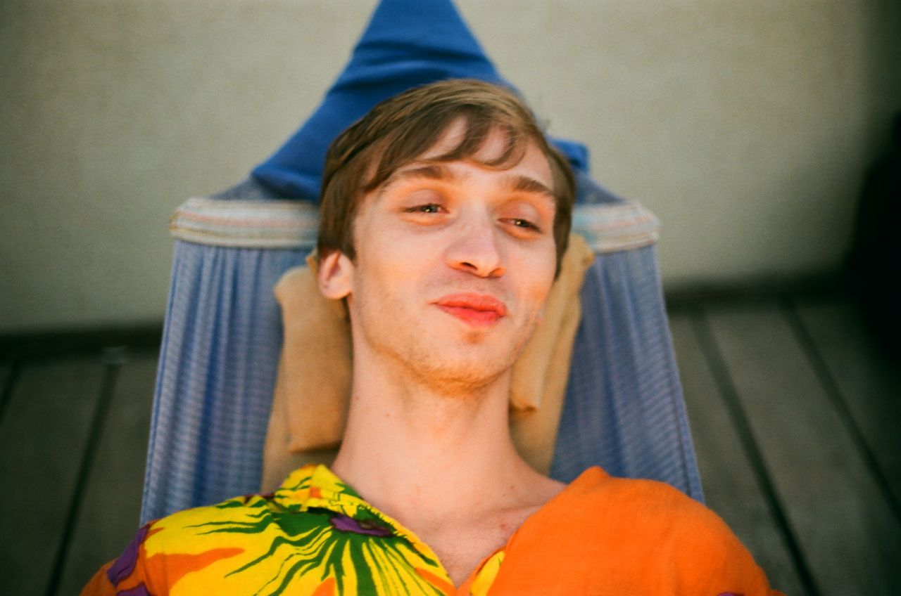

Alex Asvarisch
Phone: 0538925416
Email: Asvarischalex@gmail.com
LinkedIn: alex-asvarisch
BirthDate: 1992-10-03
Residence: Ashkelon
Skills:
Technical
- Languages: Java, Python, R, HTML5, CSS, SQL.
- Tools: Maven, JUnit, JPA, Hibernate, REST, OOP, AOP, Reflection, Jackson, XML, JSON, Lombok.
- Frameworks & Tech: Spring + Boot/Data/Security, Multithreading, Apache Tomcat, Kafka.
Eclipse, Intellij IDEA, RStudio, WebStorm, Visual Studio, Sublime Text3, Git, Trello, Postman.
- Database: MySQL, PostgreSQL, MongoDB, H2.
- Systems: MacOS, Windows.
Languages:
- Russian: Native
- English: Full professional proficiency, IELTS 6.5
- Hebrew: Level Bet
Experience:
- 08.2018 - 11.2019
Vision modelling lab, Institute of Cognitive Neuroscience, National Research University Higher School of Economics, Moscow
Project title: Truly random diffusion model
Project title: Capturing attentional capture with salience models
- 03.2018 – 07.2018
Centre for Cognition and Decision making, Institute of Cognitive Neuroscience, National Research University Higher School of Economics, Moscow
Project title: Neurobarometer.
Education:
| 09.2017 – 08.2019 |
National Research University Higher School of Economics, Moscow – M.S.
Program: Cognitive sciences and technologies: from neuron to cognition
Major: Cognitive Psychology
|
| 09.2010 – 08.2014 |
The Herzen State Pedagogical University of Russia, St. Petersburg - BSc
Major: Psychology
|